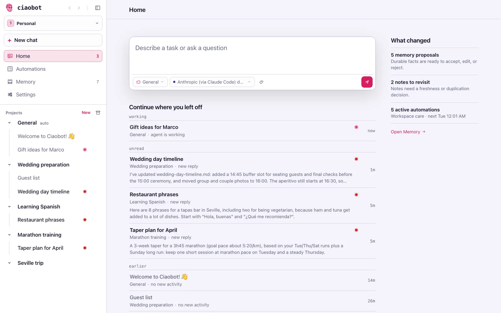
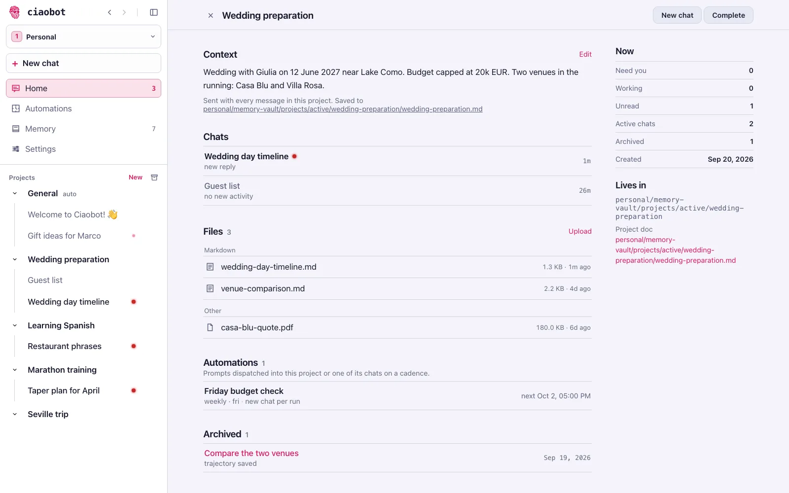
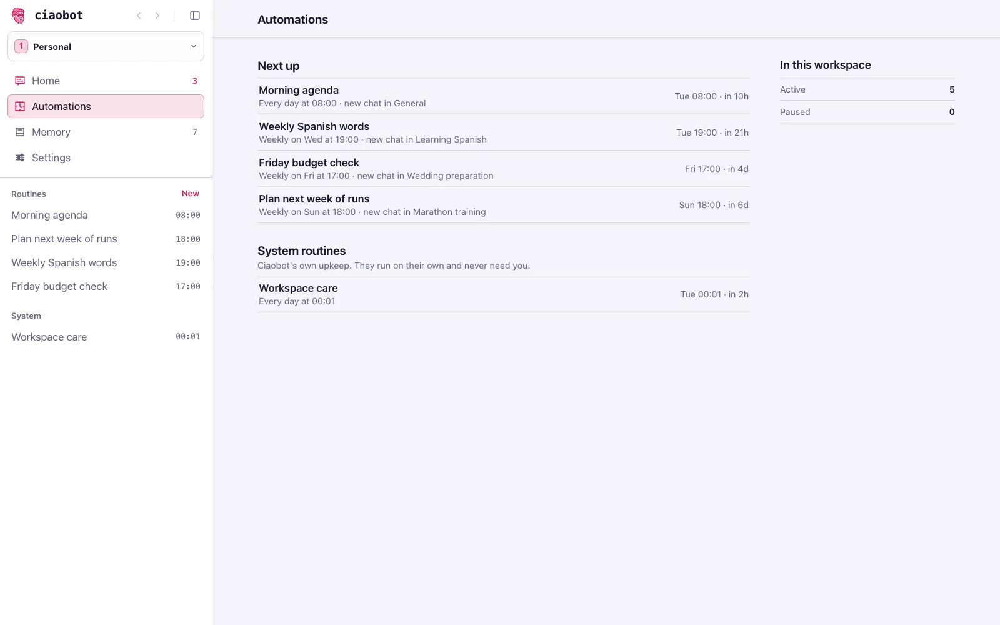

Getting started
From install to your first archived chat
About 15 minutes. You don't need to be technical, but you'll paste a command into the Terminal app.
Before you start
Four things that trip people up:
- "~/.local/bin is not in your PATH." Claude Code's installer may print this. Ciaobot finds Claude Code anyway; only your Terminal can't. To run
claude auth login, first run the command the installer printed and open a new Terminal window, or type the full path instead:~/.local/bin/claude auth login. - Hidden files. On a Mac, files whose name starts with a dot, such as
.env, are hidden. In Finder, press Cmd Shift . to show them, and again to hide them. - Ciaobot keeps a history of your folder. It uses Git, the tool programmers use to track changes, so earlier versions of your notes can be brought back and the folder can be backed up to a private GitHub repository. You never need to use Git yourself. If the folder is already inside a Git repository (a code project, for example), Ciaobot uses that repository instead of making a new one, so its history and backup cover the whole repository: give Ciaobot a folder of its own. Git repositories inside your folder keep their own history, and Ciaobot's history and backup do not include their files.
- Keep the folder out of iCloud Drive, Dropbox, Google Drive and OneDrive. Ciaobot writes to its files all the time, and sync apps can then make "conflicted copies", bring back an older version of a file or break the Git history. Ciaobot shows a warning if you pick a folder inside one of them. For a copy somewhere else, use the backup instead. On a Mac you can use a folder in Desktop, Documents or Downloads: the first time Ciaobot starts there, macOS asks to let Ciaobot Server access it. Choose Allow. If you chose Don't Allow, turn it on in System Settings → Privacy & Security → Files and Folders. If iCloud syncs your Desktop and Documents, pick another folder.
Set up
-
Have Claude Code or opencode signed in
Ciaobot doesn't have its own AI account or API key. It drives an AI tool you already use, so you need one of these two installed and signed in on the computer that runs Ciaobot:
Claude Code
Use your Claude subscription.
curl -fsSL https://claude.ai/install.sh | bash claude auth loginOn Windows, in PowerShell:
irm https://claude.ai/install.ps1 | iex, thenclaude auth login.If it says
~/.local/binis not in your PATH, see Before you start.opencode
Use OpenAI, OpenRouter, Z.ai, Ollama Cloud, a local Ollama and many more.
curl -fsSL https://opencode.ai/v2/install | bash opencode auth loginOn Windows:
npm install -g @opencode/cli, thenopencode auth login.You can set up both and switch per workspace or per chat. How the two work with Ciaobot →
-
Install Ciaobot
On a Mac with Apple Silicon (M1 or newer, macOS 13 or later), open the Terminal app and paste:
curl -fsSL https://github.com/raffaelefarinaro/ciaobot/releases/latest/download/install.sh | shWindows is a preview: no administrator rights needed, and the engine starts when you sign in. Windows guide →
This installs the Ciaobot engine and starts it in the background. Hosting it on a Linux server instead? See Run it on a server.
Your notes go in a folder called
Ciaobotin your home folder. To use a different folder, for example a notes folder you already have, add--workspacewhen you install:curl -fsSL https://github.com/raffaelefarinaro/ciaobot/releases/latest/download/install.sh | sh -s -- --workspace ~/MyNotes. On Windows, see install options. -
Open Ciaobot
When the install finishes, Ciaobot opens in your browser and you are already signed in. The Terminal also shows a one-time sign-in link: it works once, so don't share it. Later, open http://localhost:8443 on this computer.
The installer chose three things for you, so there is nothing to fill in:
- Your folder:
~/Ciaobot(%USERPROFILE%\Ciaoboton Windows), unless you picked another one. Your notes and memory live there as plain files. - Your password, made up for you. You need it to open Ciaobot on your phone or another computer.
- Your AI tool: Claude Code.
The installer does not print the password. It tells you the password is shown in the app: the first time you open Ciaobot, a card called Your Ciaobot on Home shows your folder (with a button to show it in Finder or Explorer), your password (Show and Copy) and your AI tool. Save the password in your password manager: you need it to sign in from other devices. Close the card when you are done. It then disappears on every device, and on other devices it only says that the password is shown on the computer running Ciaobot. The password is also kept in the file
.envin your folder (see I forgot my password).To use Ciaobot on your phone, open Settings → Access & devices → Other devices. On the computer running Ciaobot, the Set up this device card on Home also has a Use on your phone row that links there, until you close the card or install the app.
You can change these later: the AI tool in the workspace's settings, the password in Settings → Access & devices → PWA password, and the folder in Settings → General → Main workspace.
Ciaobot then opens a welcome chat and can give you a tour. Just say yes.
A setup wizard that asks for the folder, a password and the AI tool appears only if you start Ciaobot by hand with
ciao runbefore it has been set up, for example from a copy of the source code. The installers never show it. - Your folder:
Find your way around

Press the number keys 1, 2, … to jump between workspaces in the order they appear in the sidebar.
To limit what a workspace's agent can read on your computer, open that workspace's settings and set File access. More about file access →
Your first project
Think of something you'll keep coming back to, like a trip you're planning, a language you're learning or a project at work. The easiest way to create a project is to ask:
Ciaobot creates the project and saves that description. From now on it's sent with every chat in Learning Spanish, so you never repeat it. You can also use New next to Projects in the sidebar.

The everyday habit
-
Start a new chat in the right project
Use New chat at the top of the sidebar and pick the project, or press ⌥+N (Alt+N on Windows and Linux). For a quick task, type it into the box on Home.
-
Do one task
Talk to it as you would to an assistant: "Add a dentist appointment next Tuesday at 3pm", "Give me five phrases for ordering at a restaurant".
-
Archive it as soon as the task is done
Use the archive button in the chat header, press ⌥+⌫, or just type "archive this chat".
Archiving a finished chat. A memory insights row on Home shows Ciaobot reading it back and filing what's worth keeping. -
Glance at suggestions now and then
Anything Ciaobot isn't sure about waits for your OK. More on memory →
Why not keep one chat going?
AI models get measurably worse as a conversation grows: details from the start get missed and unrelated topics bleed into each other. Researchers call this context rot, and Anthropic's guide to context engineering explains why a short, focused context works better. A long chat is also slower and more expensive, and Ciaobot only learns from it once you archive it. Short chats keep your assistant sharp and up to date.
Need to pick up an archived chat later? Open it and choose Continue in new chat.
Keep track of the next steps
For work you want to come back to, open Tasks in the sidebar and choose New task. Try Compare three Spanish conversation classes, with a description of your budget, availability and what a useful comparison should include. Choose your Learning Spanish project to keep it with the right context.
Open the task and choose Delegate to agent. Review the prompt, then start the work. Ciaobot opens a chat where you can follow along and answer questions. When the agent reports it finished, check the result and choose Approve Done.
You can also do tasks yourself and move them through To do, In progress, In review and Done. More on Tasks →
Work on a code project
If a project is about code that lives in a git repository on your computer, link the two: open the project, choose Repository → Link and pick the repository from the list, or type its path.
Chats in that project start as normal chats. When you want to work on the code, just say so, for example Let's work on the code. The agent switches the chat to code mode, reads the repository's AGENTS.md and continues. A small code badge appears next to the chat title, and Chat details has the switch if you want to turn it on or off yourself.
Code knowledge goes into the repository's AGENTS.md; your notes, plans and decisions stay in the project as usual. More on code projects →
Let it work on a schedule
Ask for anything that should happen regularly:
Ciaobot shows you a draft (when it runs, and in which project) and asks before creating it. Each run leaves its result in a chat. You can see and pause everything on the Automations page, which also lists your Webhook triggers (runs started by another tool).
That's the whole routine. For everything else, see what it can do → or just ask it "what can you do?"

Questions
What does it cost?
Ciaobot is free and open source. You pay only for the AI you already use: a Claude subscription, an API key, or nothing at all with a local model.
What leaves my computer?
The messages you send, plus the context each chat needs, go to the AI provider you chose. Your notes, memory and chat history stay in your folder. With a local model through opencode, nothing leaves at all.
Does it work offline?
With a local model (for example Ollama) through opencode, yes. Google, web search and cloud models need a connection, of course.
Something's wrong. Where do I look?
Ask Ciaobot first ("why did my morning agenda not run?"); it can read its own logs and diagnose most problems. It can also report the bug on GitHub for you.
I forgot my Ciaobot password. How do I get back in?
The installer picks a random password for you, so you may never have typed one. To get back in:
- On the computer running Ciaobot (the host): open the login page at
http://localhost:8443and choose Sign in on this computer. Ciaobot opens a signed-in tab in your default browser. Then set a password you will remember in Settings → Access & devices → PWA password; on the host you don't need the old one. - Read it from the file: the password is the text after
PWA_AUTH_TOKEN=in the file.envinside your Ciaobot folder (by default~/Ciaobot, so~/Ciaobot/.env). It is a hidden file. On a Mac, press Cmd Shift . in Finder to show it, or rungrep PWA_AUTH_TOKEN ~/Ciaobot/.envin the Terminal. On Windows, open%USERPROFILE%\Ciaobot\.envin Notepad. - Or use a one-time link: on the host, run
ciao setup-url --workspace ~/Ciaobotin the Terminal (use your folder if you picked another one). It prints a link that signs you in when opened in a browser on that same computer.
On a phone or another computer you need the password itself; get it on the host first. Keep it to yourself: anyone with the password can use your Ciaobot.
How do I update or uninstall?
To update, run the one-line install command again, or use the update control in Settings → General, which installs the new engine for you. To stop Ciaobot, run ciao service stop in the Terminal; your notes folder is kept. If you are still on the old macOS app, run the one-liner with --migrate: it installs the engine and removes the old app for you.